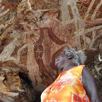
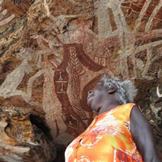

- Website: mainelandfilm.com
- Release date: October 2017 in New York / Los Angeles
- SXSW Jury Award for Excellence in Observational Cinema
- IFFBoston Special Jury Prize Winner
Filmed over three years in China and the U.S., Maineland is a multi-layered coming-of-age tale that follows two affluent and cosmopolitan teenagers as they settle into a boarding school in blue-collar rural Maine. Part of the enormous wave of "parachute students" from China enrolling in U.S. private schools, bubbly, fun-loving Stella and introspective Harry come seeking a Western-style education, escape from the dreaded Chinese college entrance exam, and the promise of a Hollywood-style U.S. high school experience. As Stella and Harry's fuzzy visions of the American dream slowly gain more clarity, they ruminate on their experiences of alienation, culture clash, and personal identity, sharing new understandings and poignant discourses on home and country.